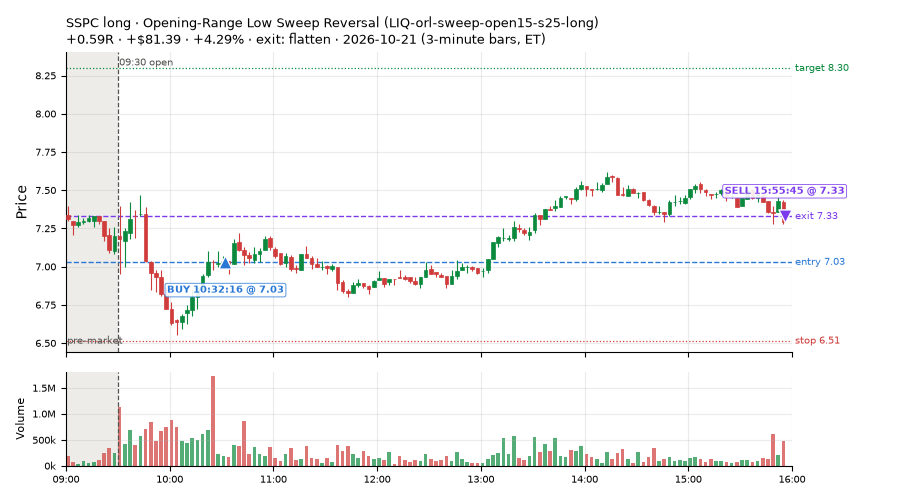
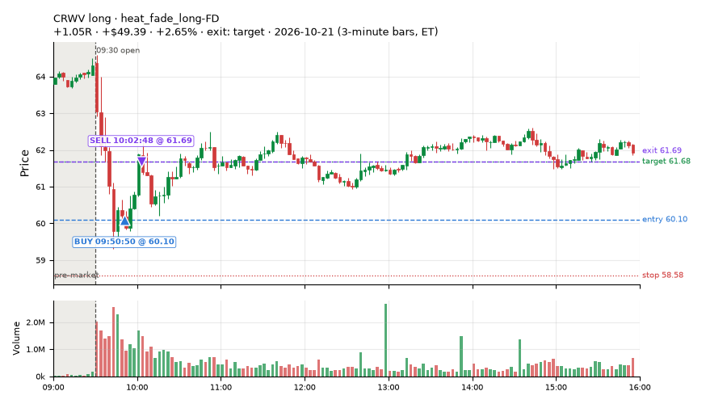
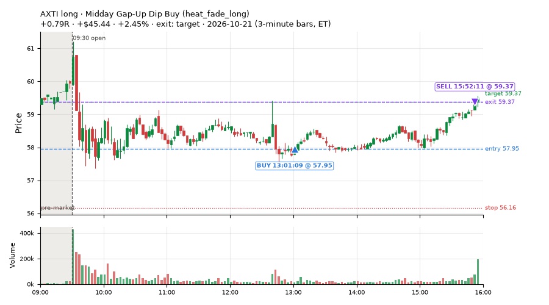
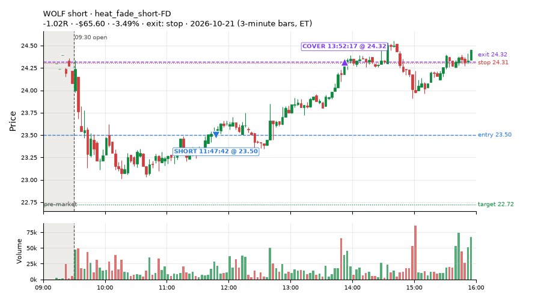
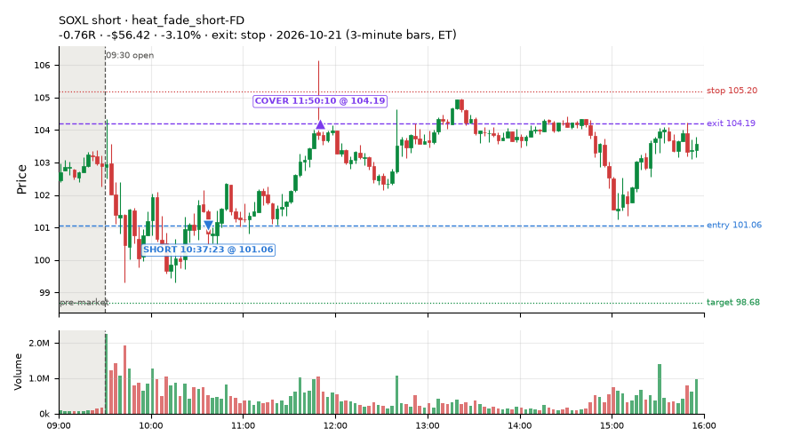
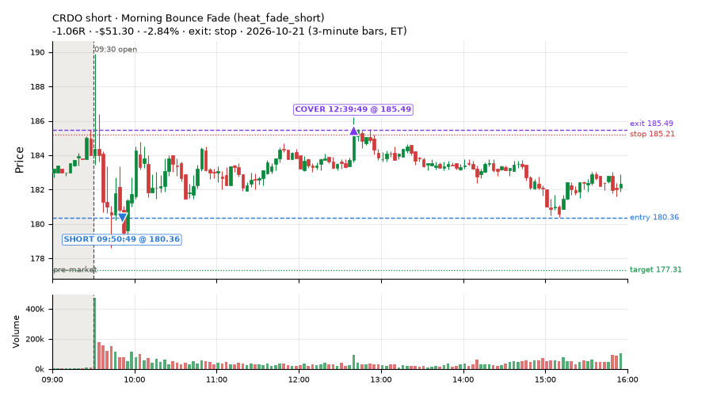
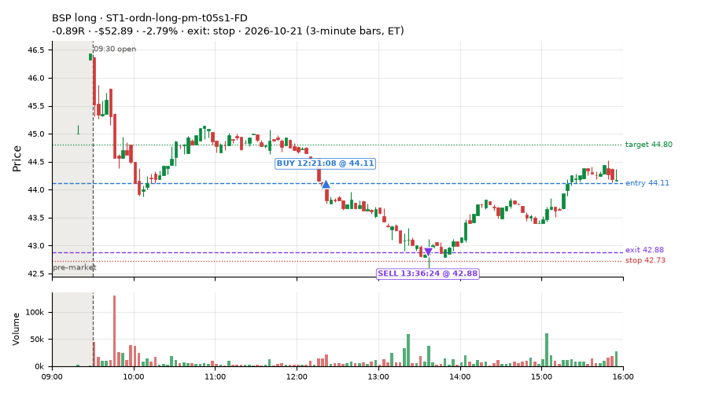
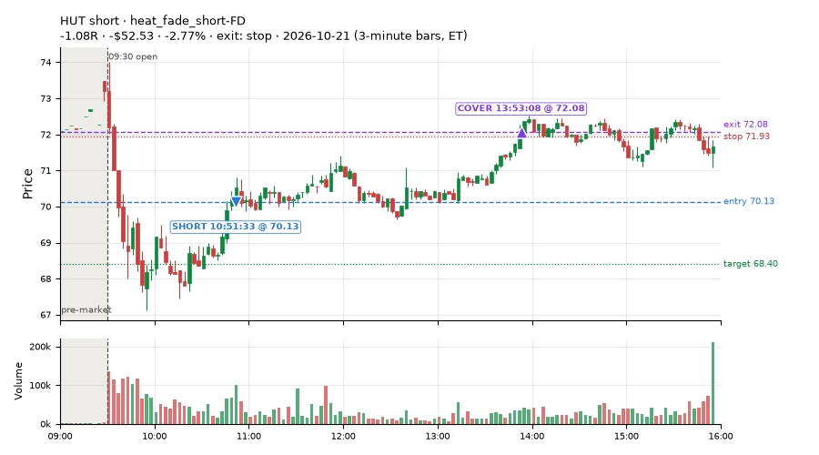

347 trades · win rate 59% · P/L $-656.79
PROBATION: no live setup has passed both locked test periods. 10 owner-directed setups added 2026-10-08 (MarcoFlow top 5 + 5 new), untested live. RW6G1 (RW6 + VWAP band guard) added 2026-10-09, probation.

| Symbol | Setup | Side | In | Out | Entry | Exit | Exit reason | % gained | P/L |
|---|---|---|---|---|---|---|---|---|---|
| SSPC | Opening-Range Low Sweep Reversal (LIQ-orl-sweep-open15-s25-long) | long | 10:32 | 15:55 | 7.03 | 7.33 | flatten | +4.29% | $81.39 |
| CRWV | heat_fade_long-FD | long | 09:50 | 10:02 | 60.10 | 61.69 | target | +2.65% | $49.39 |
| AXTI | Midday Gap-Up Dip Buy (heat_fade_long) | long | 13:01 | 15:52 | 57.95 | 59.37 | target | +2.45% | $45.44 |
| Symbol | Setup | Side | In | Out | Entry | Exit | Exit reason | % lost | P/L |
|---|---|---|---|---|---|---|---|---|---|
| WOLF | heat_fade_short-FD | short | 11:47 | 13:52 | 23.50 | 24.32 | stop | -3.49% | $-65.60 |
| SOXL | heat_fade_short-FD | short | 10:37 | 11:50 | 101.06 | 104.19 | stop | -3.10% | $-56.42 |
| CRDO | heat_fade_short | short | 09:50 | 12:39 | 180.36 | 185.49 | stop | -2.84% | $-51.30 |
| BSP | ST1-ordn-long-pm-t05s1-FD | long | 12:21 | 13:36 | 44.11 | 42.88 | stop | -2.79% | $-52.89 |
| HUT | heat_fade_short-FD | short | 10:51 | 13:53 | 70.13 | 72.08 | stop | -2.77% | $-52.53 |








Signal to fill: median 1s, 90th percentile 3s (347 trades). Bars close each minute; the order follows the bar close.
Best excursion (MFE): median 0.42R; worst (MAE) median 0.53R. 25% of trades never got +0.25R in our favour; 1 reached +1R and still closed at or below 0.
| Symbol | Setup | Best R | Worst R | Closed R |
|---|---|---|---|---|
| QGEN | CWT14-failbrk-orl-p05-lowvol-long | +5.24 | -3.52 | +1.18 |
| ETN | heat_fade_short | +0.86 | -1.00 | -1.03 |
| LULU | heat_fade_long-FD | +0.76 | -1.24 | -1.11 |
| DY | heat_fade_long-FD | +0.77 | -1.14 | -1.06 |
| FSLY | RW2-exhaustion-noon-adv150-short-FD | +0.91 | -1.19 | -0.88 |
| Entry time | Trades | Win | Avg R | P/L |
|---|---|---|---|---|
| 09:50-10:30 | 151 | 70% | +0.08 | $95.90 |
| 10:30-11:30 | 102 | 51% | -0.17 | $-459.15 |
| 11:30-13:00 | 71 | 45% | -0.27 | $-371.52 |
| 13:00-14:00 | 13 | 69% | +0.04 | $58.46 |
| 14:00-16:00 | 10 | 50% | -0.16 | $19.52 |
| Setup | Trades | Win | Avg R | Adj R (net of SPY) | P/L |
|---|---|---|---|---|---|
| Failed Opening-Range-Low Break Long (0.05 ATR) [fill] (CWT14-failbrk-orl-p05-long) | 79.0 | 72% | +0.07 | -0.22 | $89.22 |
| Failed Opening-Range-Low Break Long (0.05 ATR, low volume) [fill] (CWT14-failbrk-orl-p05-lowvol-long) | 74.0 | 69% | +0.04 | -0.25 | $-13.13 |
| Failed Opening-Range-Low Break Long (0.1 ATR) [fill] (CWT14-failbrk-orl-p10-long) | 49.0 | 71% | +0.01 | -0.37 | $57.96 |
| Failed Opening-Range-Low Break Long (low volume) (CWT14-failbrk-orl-p10-lowvol-long) | 45.0 | 64% | -0.04 | -0.48 | $-29.57 |
| Opening-Range Low Sweep Reversal (LIQ-orl-sweep-open15-s25-long) | 17.0 | 18% | -0.52 | -0.78 | $-114.58 |
| MF1-945-flowsell-vwapup-FD | 6.0 | 83% | +1.29 | +1.46 | $61.07 |
| NS2-sma50break-overbought-short-FD | 4.0 | 75% | +0.23 | +0.33 | $30.30 |
| RW2-exhaustion-noon-adv150-short-FD | 8.0 | 12% | -0.76 | -0.63 | $-174.90 |
| RW6-ns2-up3-short-FD | 1.0 | 100% | +0.30 | +0.25 | $16.44 |
| ST1-ordn-long-pm-t05s1-FD | 1.0 | 0% | -0.89 | -0.94 | $-52.89 |
| ST2-slope20up-long-am-t05s1-FD | 8.0 | 50% | -0.12 | -0.12 | $-42.88 |
| Midday Gap-Up Dip Buy (heat_fade_long) failed Apr-Jun holdout: -0.138R/trade over 1043 trades | 3.0 | 100% | +0.58 | +0.51 | $70.81 |
| heat_fade_long-FD | 7.0 | 57% | +0.09 | -0.02 | $72.31 |
| Morning Bounce Fade (heat_fade_short) failed Apr-Jun holdout: -0.015R/trade over 1420 trades | 20.0 | 30% | -0.39 | -0.22 | $-173.55 |
| heat_fade_short-FD | 25.0 | 4% | -0.75 | -0.53 | $-453.40 |
Market direction (SPY, beta 1) accounted for $681.51 of today's $-656.79; the rest ($-1,338.30) came from the setups themselves. Avg R net of SPY: -0.29 (incl. a hedge leg's cost; report only).
17 setups live today. Today: 714 signals, 347 taken, 49 lost because another setup held the symbol (7%). Since 2026-10-21 (1 sessions): 714 signals, 347 taken, 49 lost to other setups (7%). Peak open positions today 135 of 200 slots. Earnings blackout removed 552 symbols before scanning.
Simulated playing time (not live): 367 what-if trades of signals not taken, avg -0.01R, 61% winners; of them 49 lost to another setup (avg -0.07R).
Crowded out: heat_fade_long-FD
| Prio | Setup | Today sig / taken | Sessions | Signals / taken / trades | Taken/day | Expected/day | Lost to other setups | Lost to (setup n) | Top skip reasons | SIMULATED: not-taken n / avg R / win | Verdict |
|---|---|---|---|---|---|---|---|---|---|---|---|
| 1 | ST1-ordn-long-pm-t05s1-FD ST1-ordn-long-pm-t05s1-FD | 2 / 1 | 1 | 2 / 1 / 1 | 1.00 | 3.49 | 0 | – | spread / quote / size 1 | 1 / -0.85R / 0% | slow 5.0 entries/week; ~12 weeks to 60 trades |
| 2 | RW6-ns2-up3-short-FD RW6-ns2-up3-short-FD | 2 / 1 | 1 | 2 / 1 / 1 | 1.00 | 7.12 | 0 | – | not shortable / shorts off 1 | 1 / +0.21R / 100% | watch 1.00 entries/day vs ~7.12 expected |
| 3 | NS2-sma50break-overbought-short-FD NS2-sma50break-overbought-short-FD | 5 / 4 | 1 | 5 / 4 / 4 | 4.00 | 17.08 | 0 | – | not shortable / shorts off 1 | 1 / +0.21R / 100% | watch 4.00 entries/day vs ~17.08 expected |
| 4 | Big Gainer Average Reclaim Fade NS2-sma50break-overbought-short | 1 / 0 | 1 | 1 / 0 / 0 | 0.00 | 5.74 | 1 | NS2-sma50break-overbought-short-FD 1 | symbol held by another setup 1 | 1 / +0.90R / 100% | watch 0.00 entries/day vs ~5.74 expected |
| 5 | MF1-945-flowsell-vwapup-FD MF1-945-flowsell-vwapup-FD | 8 / 6 | 1 | 8 / 6 / 6 | 6.00 | 23.94 | 0 | – | spread / quote / size 2 | 2 / +1.28R / 100% | ok 30.0 entries/week |
| 6 | ST2-slope20up-long-am-t05s1-FD ST2-slope20up-long-am-t05s1-FD | 11 / 8 | 1 | 11 / 8 / 8 | 8.00 | 24.03 | 2 | heat_fade_short 1, heat_fade_short-FD 1 | symbol held by another setup 2, spread / quote / size 1 | 3 / +0.15R / 67% | ok 40.0 entries/week |
| 7 | Midday Gap-Up Dip Buy heat_fade_long | 4 / 3 | 1 | 4 / 3 / 3 | 3.00 | 30.36 | 1 | heat_fade_long-FD 1 | symbol held by another setup 1 | 1 / -1.05R / 0% | watch 3.00 entries/day vs ~30.36 expected |
| 8 | Opening-Range Low Sweep Reversal LIQ-orl-sweep-open15-s25-long | 21 / 17 | 1 | 21 / 17 / 17 | 17.00 | – | 3 | CWT14-failbrk-orl-p10-lowvol-long 3, CWT14-failbrk-orl-p10-long 3, CWT14-failbrk-orl-p05-lowvol-long 3 | symbol held by another setup 3, daily loss cap 1 | 4 / +0.35R / 75% | ok 85.0 entries/week |
| 9 | RW2-exhaustion-noon-adv150-short-FD RW2-exhaustion-noon-adv150-short-FD | 40 / 8 | 1 | 40 / 8 / 8 | 8.00 | 50.34 | 0 | – | daily loss cap 25, not shortable / shorts off 4, spread / quote / size 3 | 32 / -0.01R / 53% | watch 8.00 entries/day vs ~50.34 expected |
| 10 | heat_fade_long-FD heat_fade_long-FD | 12 / 7 | 1 | 12 / 7 / 7 | 7.00 | 51.74 | 3 | heat_fade_long 3, ST1-ordn-long-pm-t05s1-FD 1 | symbol held by another setup 3, spread / quote / size 2 | 5 / +0.81R / 100% | crowded-out 3 of 12 signals (25%) lost to setups already holding the symbol |
| 11 | Failed Opening-Range-Low Break Long (low volume) CWT14-failbrk-orl-p10-lowvol-long | 67 / 45 | 1 | 67 / 45 / 45 | 45.00 | – | 1 | CWT14-failbrk-orl-p10-long 1, CWT14-failbrk-orl-p05-long 1, LIQ-orl-sweep-open15-s25-long 1 | per-setup cap 16, spread / quote / size 3, daily loss cap 2 | 22 / +0.16R / 77% | ok 225.0 entries/week |
| 12 | Failed Opening-Range-Low Break Long (0.1 ATR) [fill] CWT14-failbrk-orl-p10-long | 83 / 49 | 1 | 83 / 49 / 49 | 49.00 | – | 1 | CWT14-failbrk-orl-p05-lowvol-long 1, CWT14-failbrk-orl-p05-long 1, CWT14-failbrk-orl-p10-lowvol-long 1 | per-setup cap 31, spread / quote / size 2, symbol held by another setup 1 | 34 / +0.13R / 76% | ok 245.0 entries/week |
| 13 | Morning Bounce Fade heat_fade_short | 35 / 20 | 1 | 35 / 20 / 20 | 20.00 | 31.76 | 0 | – | spread / quote / size 14, not shortable / shorts off 1 | 15 / -0.23R / 33% | ok 100.0 entries/week |
| 14 | Failed Opening-Range-Low Break Long (0.05 ATR, low volume) [fill] CWT14-failbrk-orl-p05-lowvol-long | 134 / 74 | 1 | 134 / 74 / 74 | 74.00 | – | 0 | – | per-setup cap 54, spread / quote / size 6 | 60 / -0.03R / 68% | ok 370.0 entries/week |
| 15 | heat_fade_short-FD heat_fade_short-FD | 100 / 25 | 1 | 100 / 25 / 25 | 25.00 | 173.78 | 22 | heat_fade_short 20, CWT14-failbrk-orl-p05-lowvol-long 1, CWT14-failbrk-orl-p05-long 1 | daily loss cap 34, symbol held by another setup 22, spread / quote / size 14 | 75 / -0.00R / 45% | watch 25.00 entries/day vs ~173.78 expected |
| 16 | Failed Opening-Range-Low Break Long (0.05 ATR) [fill] CWT14-failbrk-orl-p05-long | 176 / 79 | 1 | 176 / 79 / 79 | 79.00 | – | 15 | CWT14-failbrk-orl-p10-lowvol-long 14, CWT14-failbrk-orl-p10-long 14, CWT14-failbrk-orl-p05-lowvol-long 14 | per-setup cap 70, symbol held by another setup 15, spread / quote / size 12 | 97 / -0.07R / 66% | ok 395.0 entries/week |
| 17 | Gap-Down Bounce Rejection Short (5% gap) CWT09-gapdn-bounce-g5-lowerhalf-short | 13 / 0 | 1 | 13 / 0 / 0 | 0.00 | – | 0 | – | not shortable / shorts off 13 | 13 / -0.60R / 38% | slow no entries yet |
Every trade is attached as a CSV you can open and edit in Excel or Google Sheets. Live page: https://misiti15.github.io/MCF/live/